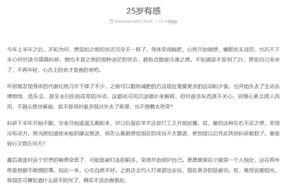

Well，it’s been a while. 最近没怎么更新倒不是因为心情不好课业压力大，纯粹是没遇到什么好的契机，没有想写一写的冲动。今日在gym突发奇想，自己博士阶段做了哪些事，又有哪些是没能做到的，三年半了，是时候反躬自省一下。
提笔之前，还是说一句饮食要均衡啊。之前一直被唠叨垃圾食品垃圾食品，但是对此毫无概念；哪怕之前看的营养学方面的书籍，也因为当时食堂/家里丰富的选择而不以为意；之前的预制高级面也觉得可以凑合，毕竟口感好也有肉有菜的。现在方知，很多微量元素如果平时饮食不够均衡就会缺失，比如海鱼吃得少，鱼油摄取不够，睡眠啊心情啊等会受影响；太阳晒得不够多，不够毒，V-D的不足也会导致抑郁。自打我开始吃鱼油和V-D，就感觉心情一天天的比之前好了不知凡几，之前还觉得自己来美国变i了，现在感觉e也是可以maintain的。睡眠也比之前好了很多，早睡早起，时间充足；一天天的觉得精力和心力都有富余，很是不错。
刚来boston的时候，带着好奇和新鲜感，认识了许多新同学，也开展了诸多新爱好，回首这一年，常怀感恩心，无论是我坚持到现在的blog、hiking，还是那一年发展成为老朋友的胜哥老顾等，都将是人生的宝贵财富。这一年，也开始真正独自生活，自己照料自己，做饭、洗衣、打扫卫生等，well，这些差强人意吧。
22年秋到23年夏算是另外一个happy time，科研上还没self-motivated，所幸老板没有催，也拿了一些荣誉和实习，生活上更是德扑从入门到精通hhhh。为数不多的和朋友晚上无忧无虑打牌的时光，同时一有机会就去BSO和hiking，生活乐逍遥。当时波士顿的寒冷并没有对我有太大影响，饮食也是自己做的多，所以心情还算是okay。不过好像是从这个时候开始，没有心力去读一些大部头书了，或者说想要一年一个主题的阅读被迫放下了。
23年秋到24年夏算是比较suffering的时光，朋友该毕业的毕业，科研进展不顺利，长时间没回国的思乡之情也日益加深，因为饮食的单调带来的营养缺失（V-D）还未曾被我关注。虽然在冬日和haiduo会去探索滑雪，但那也只是对现实的短暂逃离，整个人的状态还是消极且悲观的，甚至连dating都不想。
24年暑假回了次家，很是安慰了自己的心理。无论是父母朋友的言语，还是网吧那熟悉的味道，都狠狠地给自己增添了把安全感。三年没见老爸老妈，还是和记忆中老了些许，带老妈出去玩了一趟，她肉眼可见的开心，尤其是后面把照片打印出来送回家里，可能是那两个月做的最有意义的一件事情吧。
来了之后波士顿的冷秋和不顺利的科研，包括饮食上的不均衡，迅速让我emo起来。不过万幸的是冬天有新来的同学提醒我了解下维生素和保健品，还有个一见如故的师兄，又过上了有朋友、心态积极的日子。尝试了下找工作，感觉进行不下去了呀，还是得找老板问问能不能做postdoc。
再细细说说来美这些年培养或者是持续发展的爱好/技能吧。首先是认识了些好朋友，可以很close的那种，不用多，只手之数却足够珍贵。Hiking，虽然去年爬的算少，但兴趣不减，也会有机会多转转。健身的话没有刚来的时候那么拼了，毕竟会逐步让步给一些更重要的聚会等等。德扑的话我只能说从入门到精通，哈哈哈哈哈，确实很好玩，但局也是难以组起来。驾驶技能算是入门？毕竟单人也开过了9hour，可以独自带老妈road trip。也自己组装了电脑，well，这个虽然不难，但真正动手前总是踟蹰，现在我是硬件随便弄，甚至都不要机箱了。摄影的技术一直有进步，从之前青涩的照片很容易看出来。
别的方面的话blog也一直有在更新，坚持biweekly算是比较久了。看过的书和值得一提的电视剧等都会留下自己的想法，或是蜻蜓点水，或是长篇大论，anyway，算是一个进步吧。这几年也有一直阅读，虽然心力不足时看爽文更多些，但对小说的taste还是上去了，也是很欣喜的地方吧。很多东西我觉得经历越多，对它的鉴赏能力越高，像中餐、艺术品、音乐、酒等。说到艺术，这几年对西方艺术从中世纪到后印象派之间这段时间，尤其是绘画，了解颇深，对中国的陶瓷雕像也略有涉猎，算是逛这么多博物馆的收获吧。
话虽如此，也不得不提一些做的不过好或是半途而废的东西。首先就是口琴了，之前追妹子/才从国内来的时候pickup，后面灰心丧气的就放下了，乐器确实是一个需要长时间投入的爱好，要不要再跳入这个坑可以考虑下。其次就是炒股了吧，之前做空nvda狠狠地亏了笔，就一直没入局了，本金不大的时候确实没必要太关注。阅读来了之后就没有很成系统地钻研某一方向了，现在状态不错倒是可以再pickup起来。滑雪没有掌握倒是颇为遗憾，单板摔得着实有些惨了。对古典乐，中国艺术史，西方艺术史没有更进一步的了解也是之前心力不足吧，希望后面会有时间多了解下。